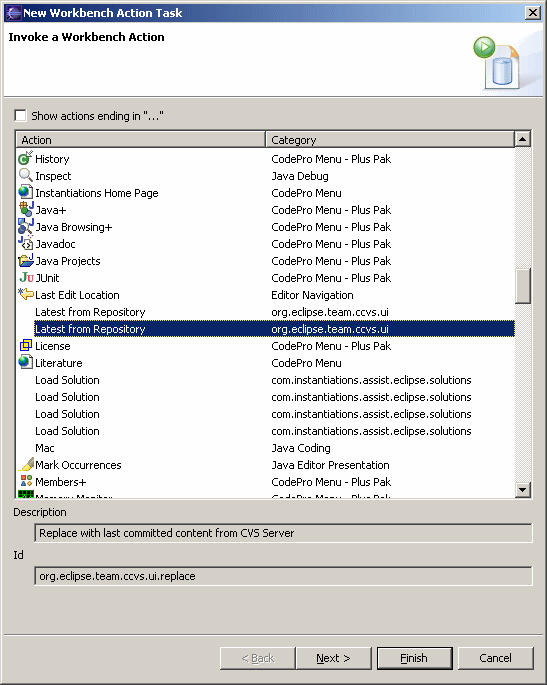
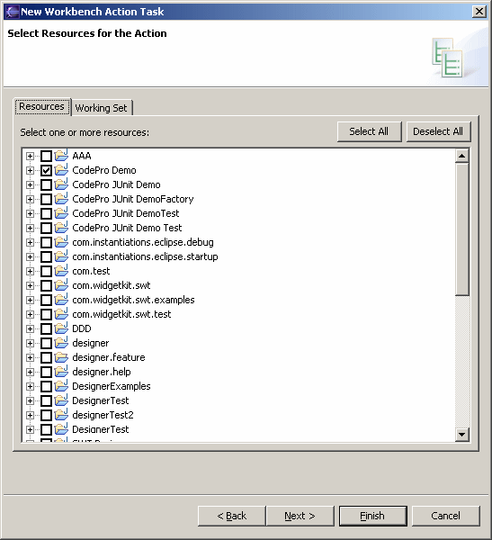
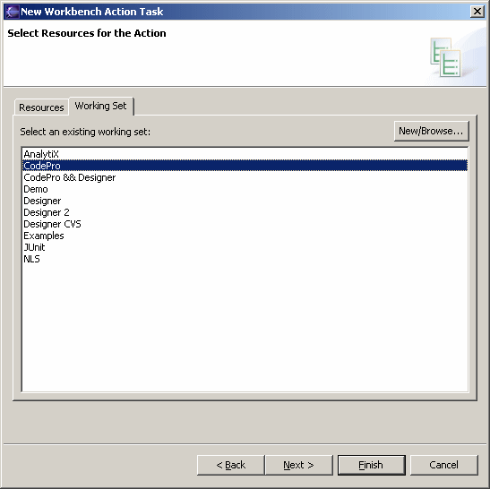

Schedule Workbench Action To schedule a workbench action (such as one appearing on a some menu) to be run at a specified time, open the scheduler view, right click to access the popup menu, select the "New" submenu, and then select "Workbench Action". Select one of the actions listed. This task may be used it for a variety of purposes such as repository synchronization at startup, auto-saving open editors every 10 minutes, auto-starting ClearCase or some other server. Some actions expect to work on a particular resources. For those actions, clicking the "Next >" button will cause the Select Resources page to appear. If the action only works with a specific kind of action, the list will be filtered as appropriate.  Alternatively, a Working Sets may be selected.  Click the "Next >" button to schedule when the exit is to occur. |